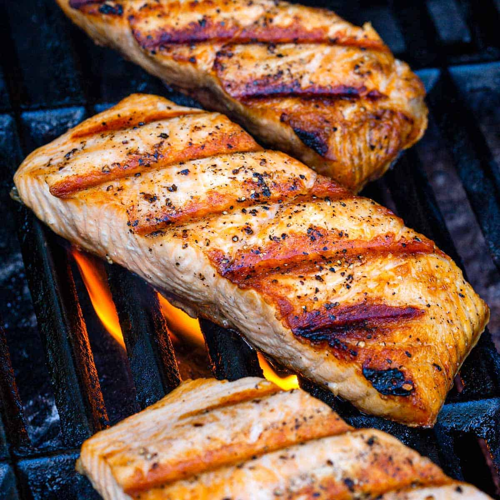

Grilled Salmon

Decription
Grilled salmon is healthy and easy to prepare on
a sizzling hot barbecue. Learn the essential tips
for nailing beautiful char marks and achieving a
tender, flaky texture. It’s a seafood dish that
requires only a few simple seasonings and cooks
in less than 10 minutes.
Ingredients
- 2 Salmon Fillets
- Paper towels
- Olive oil
- Salt
- Pepper
Steps
- Cut the salmon into 2 ½ to 3-inch fillets.
- Wrap in paper towels and refrigerate for 15 minutes.
- Brush each side with olive oil and season with salt and pepper.
- Preheat gas grill to high, clean and oil the grates.
- Place fish on a diagonal, skin-side up. Cover and cook about 4 to 5 minutes.
- Flip, cover and cook until the desired doneness is reached.
- Serve with lemon wedges.